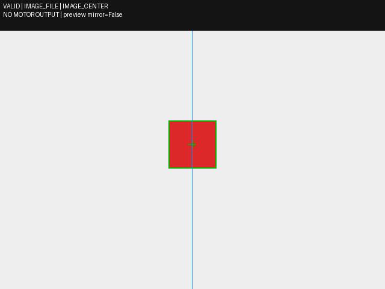
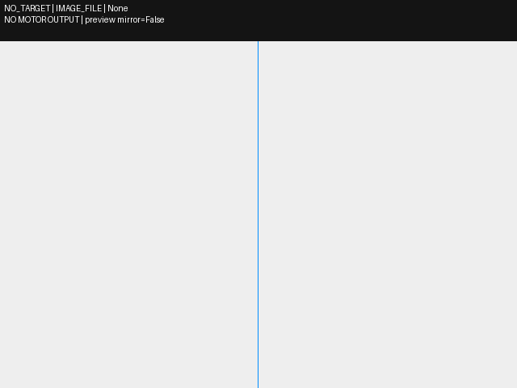
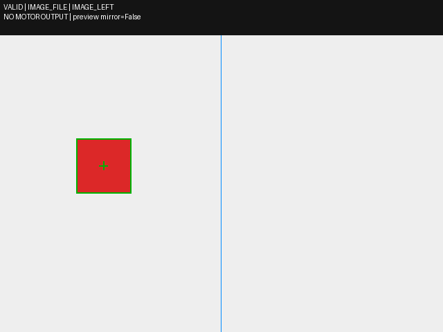
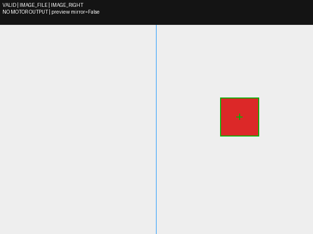
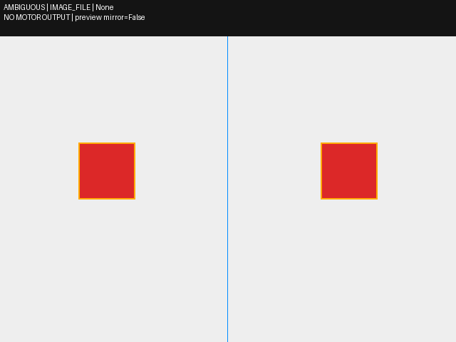

Frame 0: VALID

IMAGE_FILE / IMAGE_LEFT
输入来源见每帧标签。文件/GIF/K230 JSONL回放均不是实物闭环。本程序不连接神经计算、FPGA或电机；接入缺项见 project_proposals.jsonl。
预览镜像不改变输出坐标；K230无原图时显示的是带明确标签的检测示意。
IMAGE_FILE / IMAGE_LEFT

IMAGE_FILE / IMAGE_RIGHT

IMAGE_FILE / IMAGE_CENTER

IMAGE_FILE / None

IMAGE_FILE / IMAGE_LEFT

IMAGE_FILE / None

IMAGE_FILE / IMAGE_RIGHT

IMAGE_FILE / None